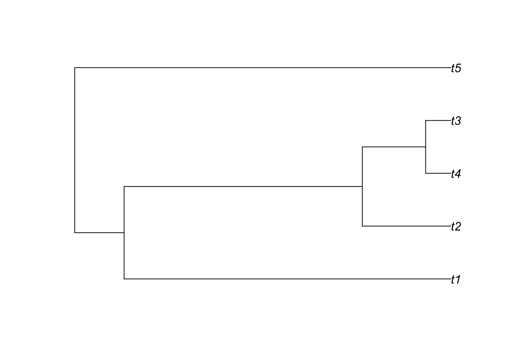

##Objectives By the end of this week, you will have:
Things I want you do are in bold.
In this class we’ll be using a variety of programs and technologies. Most are open source: “software that can be freely used, changed, and shared (in modified or unmodified form) by anyone” https://opensource.org. For science, open source software is important: we build on the work of others in making discoveries, and open software allows others to build on it in the same way. It also aids transparency and reproducibility: you can go deep into code to see what is being done, and even if a developer stops supporting software, someone else can take it over and maintain it.
Every student needs a GitHub account so we can all use git together. Git is like a mixture of track changes in Microsoft Word, simultaneous editing in a Google Docs form, and a set of files backed up with Dropbox. It is used a lot by people writing software: you can keep track of who has added changes to code, roll back code to an earlier version, and merge code that was worked on different people at the same time. GitHub is a place where a lot of open source software is housed. It offers free accounts (with some restrictions). We’ll be using it to do homework and for our discussions.
Go to GitHub now and get an account.
You will need a variety of software: right now, R and git; eventually, things like RevBayes, BEAST, and more. Having access to the command line (i.e., by using /Applications/Utilities/Terminal.app on a Mac) will make things easier.
On a Mac, it is easiest to first install homebrew (will help a lot with later steps): see here for how to do that. Then install git. For Linux, you probably already know how to use a package manager. For Windows, there is a git installer, but you might consider something like cygwin as well. Another option for all platforms is to use docker. In this case, it’s a way of installing tools to run in their own linux environment, but there’s also a web interface. To do this, install Docker community edition. Then follow the instructions at https://github.com/bomeara/phydocker for how to install and use a docker image that has R with all the packages we will need and various other useful software.
To install R, go to your preferred CRAN mirror to download it: I’d suggest https://cran.rstudio.com. What does all this mean? CRAN = Comprehensive R Archive Network: it’s where a lot of R packages are stored and readied for installation. A mirror is a computer that stores a copy of files on another computer. This is an old school approach to creating redundancy and convenience: rather than every R user in the world trying to copy a file off of one computer’s hard drive connected to the wall with one ethernet cable, there’s a whole set of computers, often with one fairly close to the user and so with faster download speeds. However, these can have their own issues: some might not update their copies often (look at this to see some of these), some are slow, etc. A more modern approach is a content delivery network (CDN): a distributed set of servers, and a user is automatically routed to the best one for her or him given location, speed, server status, etc. When you watch a movie on Netflix, you’re not using the same server as everyone else, for example. The R mirror I suggest you use is one run by the RStudio commercial company: it’s actually a CDN and is secure and fast. Unlike the other R mirrors, it also records number of times each package is downloaded, which can be useful data for package authors.
Once R is installed, it’s time to install packages. Most packages are on CRAN, though an increasing number are just on R-Forge, GitHub, or other sites. (CRAN has volunteers who check packages thoroughly to make sure they install on a variety of operating systems, keep to modern coding standards, deal with licensing appropriately, etc. (they can’t, of course, ensure that the statistical approaches are sound): this is great for users but some developers find it difficult, so put their packages elsewhere).
One helpful way to navigate the array of R packages is through task views: curated lists of packages. You can also install all the packages in a view and those they depend on. Do this:
install.packages("ctv") #the CRAN task view packageAnd then choose the packages to install. For this class, I’d suggest Phylogenetics and WebTechnologies:
library(ctv) #to load the package
install.views(c("Phylogenetics", "WebTechnologies"))We will be using unit testing to check homework. For this, you will need to install the testthat package.
#install.packages("testthat")Bioconductor is a separate repository with lots of packages for dealing with genetic data, especially nextgen data. To install this and a few initial packages:
source("http://bioconductor.org/biocLite.R")
biocLite()
biocLite("Biostrings")I would suggest using RStudio for writing R and handling markdown (see below). It is free and open source; you can install it from here.
Once you have all this done, it is time to start the exercise.
We are going to adopt a programming approach that has you write functions in one file, then run analyses in an R markdown document. This very document is an R markdown doc, actually. Markdown is like a very lightweight alternative to html that is far more readable. Rather than writing <b>this</b> to make bold text, you can instead write **this**. “So what?” was my first thought, but it turns out it does make a lot of things easier. R markdown lets you embed R calls within a document and so intersperse text and code very naturally. It can embed figures, too. In fact, the book for the course is written in R markdown.
Your assignment has three parts:
gettingstarted_exercise.RR calls in R markdown go within sections delimited by three backticks (`, the character just to the left of the 1 on US English keyboards; YMMV on other keyboards). For R code to execute, you must include {r} after the first three. Look in the raw file here at the section below:
2+3## [1] 5library(ape)
plot(rcoal(5))
Look at the Markdown Cheatsheet PDF for more info.
To do
Take the following lines and do what they say.
MAKE THIS LINE BOLD
MAKE THE WORD ITALIC ITALICIZED
MAKE THE FOLLOWING R CODE CREATE A PLOT IN THIS DOCUMENT
plot(density(rnorm(1000)))
Edit this document so that this code all runs properly. You will need to change eval=FALSE to eval=TRUE within the curly brackets, then do rmarkdown::render("gettingstarted.Rmd").
# Some basic tests to make sure things are running.
GetHowManyTrees <- function(ntaxa=10) {
#ape can compute this for us.
result <- ___SOME FUNCTION WITH AN ARGUMENT_____
return(result)
}
GetAlignment <- function() {
#Let's see where mafft is installed
library(ape)
print(system("which mafft"))
data(woodmouse)
result <- ips::mafft(____SOME INPUT ARGUMENT____)
return(result)
}